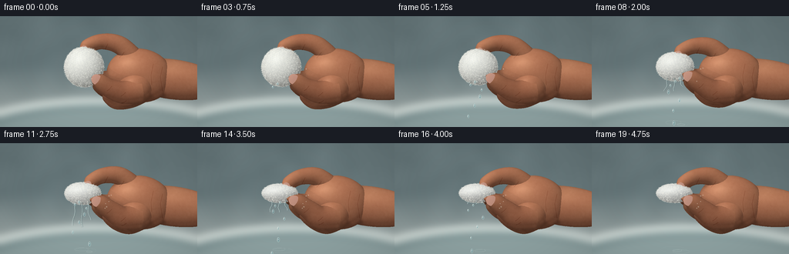
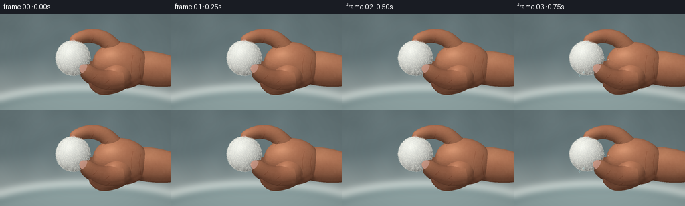

CODING AGENTS AS PIXEL WORLD MODELS
traex/GPT-6.1-Sol · mechanics_0016
点击播放 · 原生 RGB 像素
此结果可播放，但该运行尚未通过最终提交审核。页面展示不代表评测通过。
逐轮保存的候选
回放视频、检查图与代码变化。
每份候选均可单独播放。实际图片检查记录在下方工具轨迹中。
候选 01播放与检查图
点击播放 · 原生 RGB 像素


展开代码变化
--- 上一保存版本
+++ 本次保存版本
@@ -0,0 +1,360 @@
+import numpy as np
+from PIL import Image, ImageDraw, ImageFilter
+from scipy.ndimage import gaussian_filter, map_coordinates
+from pathlib import Path
+import artifact_io
+
+ROOT=Path(__file__).resolve().parent
+W,H=256,144
+S=3
+WW,HH=W*S,H*S
+Y,X=np.mgrid[0:HH,0:WW].astype(np.float32)
+X=(X+.5)/S; Y=(Y+.5)/S
+rng=np.random.default_rng(716)
+# The camera is fixed in a softly lit bathroom, close to the fingers.
+noise=rng.normal(size=(HH,WW)).astype(np.float32)
+large=gaussian_filter(noise,28); large/=large.std()
+medium=gaussian_filter(noise,3); medium/=medium.std()
+fine=gaussian_filter(noise,.52); fine/=fine.std()
+light=np.array([-.43,-.63,.65]); light/=np.linalg.norm(light)
+
+
+def norm(v):
+ v=np.asarray(v,float)
+ return v/(np.linalg.norm(v,axis=-1,keepdims=True)+1e-8)
+
+
+def catmull(points, count):
+ points=np.array(points,float)
+ p=np.concatenate([points[:1],points,points[-1:]])
+ ts=np.linspace(0,len(points)-1,count)
+ out=[]
+ for t in ts:
+ i=min(int(t),len(points)-2); t=t-i
+ a,b,c,d=p[i:i+4]
+ out.append(.5*((2*b)+(-a+c)*t+(2*a-5*b+4*c-d)*t*t+(-a+3*b-3*c+d)*t*t*t))
+ return np.array(out)
+
+
+def tube(points,radii,mat=1, sections=40, sides=24, flatten=.91):
+ c=catmull(points,sections)
+ # rounded closed fingertip, naturally tapering phalanges
+ rr=np.interp(np.linspace(0,len(radii)-1,sections),np.arange(len(radii)),radii)
+ t=norm(np.gradient(c,axis=0))
+ a=norm(np.cross(t,np.array([0,0,1.])))
+ b=norm(np.cross(a,t))
+ angles=np.arange(sides)*2*np.pi/sides
+ dirs=a[:,None,:]*np.cos(angles)[None,:,None]+flatten*b[:,None,:]*np.sin(angles)[None,:,None]
+ p=c[:,None,:]+rr[:,None,None]*dirs
+ n=norm(a[:,None,:]*np.cos(angles)[None,:,None]+b[:,None,:]*np.sin(angles)[None,:,None]/flatten)
+ faces=[]
+ for j in range(sections-1):
+ for i in range(sides):
+ ii=(i+1)%sides
+ faces.extend([(j*sides+i,(j+1)*sides+i,j*sides+ii), (j*sides+ii,(j+1)*sides+i,(j+1)*sides+ii)])
+ return p.reshape(-1,3),n.reshape(-1,3),np.array(faces),mat
+
+
+def ellipsoid(center,radii,mat=1, theta=0, nu=44,nv=28, cotton=False):
+ u=np.linspace(0,2*np.pi,nu,endpoint=False)
+ v=np.linspace(.001,np.pi-.001,nv)
+ nx=np.sin(v)[:,None]*np.cos(u)[None,:]
+ ny=np.cos(v)[:,None]+u[None,:]*0
+ nz=np.sin(v)[:,None]*np.sin(u)[None,:]
+ base=np.stack([nx,ny,nz],-1)
+ rr=np.ones((nv,nu))
+ if cotton:
+ # Irregular, densely packed, small clumps in a spherical mass of fibers.
+ rr+=(.028*np.sin(nx*21+ny*7+nz*4)*np.sin(ny*19+nz*17)+.022*np.sin(nx*9+nz*12)+.014*np.sin(ny*38+nx*14)*np.cos(nz*35))
+ p=base*np.array(radii)*rr[:,:,None]
+ n=norm(base/np.array(radii))
+ rot=np.array([[np.cos(theta),-np.sin(theta),0],[np.sin(theta),np.cos(theta),0],[0,0,1]])
+ p=p@rot.T+center; n=n@rot.T
+ faces=[]
+ for j in range(nv-1):
+ for i in range(nu):
+ ii=(i+1)%nu
+ faces.extend([(j*nu+i,(j+1)*nu+i,j*nu+ii),(j*nu+ii,(j+1)*nu+i,(j+1)*nu+ii)])
+ return p.reshape(-1,3),n.reshape(-1,3),np.array(faces),mat
+
+
+def raster(meshes):
+ depth=np.full((HH,WW),-1e4,np.float32)
+ normals=np.zeros((HH,WW,3),np.float32)
+ mats=np.zeros((HH,WW),np.uint8)
+ for verts,nn,ff,mat in meshes:
+ screen=verts[:,:2]*S
+ for f in ff:
+ a,b,c=screen[f]
+ xmin=max(0,int(np.floor(min(a[0],b[0],c[0]))))
+ xmax=min(WW-1,int(np.ceil(max(a[0],b[0],c[0]))))
+ ymin=max(0,int(np.floor(min(a[1],b[1],c[1]))))
+ ymax=min(HH-1,int(np.ceil(max(a[1],b[1],c[1]))))
+ if xmin>xmax or ymin>ymax:continue
+ den=(b[1]-c[1])*(a[0]-c[0])+(c[0]-b[0])*(a[1]-c[1])
+ if abs(den)<1e-6:continue
+ ys,xs=np.mgrid[ymin:ymax+1,xmin:xmax+1]
+ xs=xs+.5;ys=ys+.5
+ w0=((b[1]-c[1])*(xs-c[0])+(c[0]-b[0])*(ys-c[1]))/den
+ w1=((c[1]-a[1])*(xs-c[0])+(a[0]-c[0])*(ys-c[1]))/den
+ w2=1-w0-w1
+ inside=(w0>=-1e-6)&(w1>=-1e-6)&(w2>=-1e-6)
+ z=verts[f,2]
+ zz=w0*z[0]+w1*z[1]+w2*z[2]
+ d=depth[ymin:ymax+1,xmin:xmax+1]
+ visible=inside&(zz>d)
+ if not np.any(visible):continue
+ d[visible]=zz[visible]
+ ns=nn[f]
+ n=w0[:,:,None]*ns[0]+w1[:,:,None]*ns[1]+w2[:,:,None]*ns[2]
+ normals[ymin:ymax+1,xmin:xmax+1][visible]=n[visible]
+ mats[ymin:ymax+1,xmin:xmax+1][visible]=mat
+ normals=norm(normals)
+ return depth,normals,mats
+
+
+def background():
+ # An out of focus white porcelain basin and blue-gray bathroom wall.
+ bg=np.zeros((HH,WW,3),np.float32)
+ mix=np.clip((Y-65)/65,0,1)
+ for k,(a,b) in enumerate(zip([102,119,122],[166,177,175])):
+ bg[:,:,k]=a+(b-a)*mix+large*2.2
+ # Basin rolled rim and inside, deliberately defocused.
+ im=Image.new('RGB',(WW,HH)); im.paste(Image.fromarray(np.uint8(np.clip(bg,0,255))))
+ d=ImageDraw.Draw(im)
+ d.ellipse((-75*S,106*S,330*S,232*S),fill=(213,223,219))
+ d.ellipse((-50*S,115*S,310*S,224*S),fill=(112,136,138))
+ d.ellipse((-37*S,119*S,303*S,222*S),fill=(142,162,162))
+ im=im.filter(ImageFilter.GaussianBlur(4.5*S))
+ bg=np.array(im,dtype=float)
+ # Light falloff and a restrained photographic vignette.
+ vignette=1-.11*((X-122)**2/170**2+(Y-67)**2/140**2)
+ return bg*vignette[:,:,None]
+
+BG=background()
+
+
+def nail_mesh(points,radii,center_frac,length,width):
+ # Thin curved keratin plate, seated on the dorsal face of the distal phalanx.
+ c=catmull(points,120)
+ t=norm(np.gradient(c,axis=0))
+ i=int(center_frac*119)
+ center=c[i]; axis=t[i].copy(); axis[2]=0; axis=norm(axis)
+ side=norm(np.cross(axis,[0,0,1]))
+ rr=np.interp(i/119*(len(radii)-1),np.arange(len(radii)),radii)
+ verts=[]; normals=[]
+ nr,na=12,40
+ for r in np.linspace(.001,1,nr):
+ for ang in np.linspace(0,2*np.pi,na,endpoint=False):
+ along=r*np.cos(ang)*length*.5
+ lateral=r*np.sin(ang)*width*.5
+ p=center+axis*along+side*lateral
+ p[2]=center[2]+rr*.91*np.sqrt(max(.03,1-(lateral/rr)**2))+.30-.009*along*along
+ n=norm(np.array([.018*along*axis[0]+lateral/(rr*rr)*side[0],.018*along*axis[1]+lateral/(rr*rr)*side[1],1]))
+ verts.append(p); normals.append(n)
+ faces=[]
+ for j in range(nr-1):
+ for k in range(na):
+ kk=(k+1)%na
+ faces.extend([(j*na+k,(j+1)*na+k,j*na+kk),(j*na+kk,(j+1)*na+k,(j+1)*na+kk)])
+ return np.array(verts),np.array(normals),np.array(faces),3
+
+
+def lerp(a,b,p):return (1-p)*np.array(a,float)+p*np.array(b,float)
+
+
+def geometry(p):
+ meshes=[]
+ # Wrist and the fleshy palm give the four curling fingers an anatomical origin.
+ meshes.append(ellipsoid((224,82,-8),(66,26,22),theta=.13))
+ meshes.append(ellipsoid((181,77,0),(43,35,24),theta=.14))
+ meshes.append(ellipsoid((175,93,12),(24,21,18),theta=-.28))
+ # Pinky and ring are behind the cotton and are seen curled under the grip.
+ pink=lerp([[194,98,-1],[171,109,1],[151,112,7],[139,104,13],[137,97,13]],[[190,99,-1],[169,108,5],[152,103,13],[139,93,19],[141,87,19]],p)
+ ring=lerp([[188,86,-4],[163,97,-2],[140,97,6],[127,89,15],[125,81,16]],[[186,85,-2],[162,95,0],[139,90,10],[126,80,21],[130,74,22]],p)
+ middle=lerp([[183,71,-6],[158,79,-8],[130,82,2],[115,76,12],[114,69,14]],[[183,73,-5],[157,76,-4],[134,76,7],[120,70,22],[124,64,25]],p)
+ meshes.append(tube(pink,[10,10,9,7,.2],sections=40))
+ meshes.append(tube(ring,[12,12,10,8,.2],sections=40))
+ meshes.append(tube(middle,[12.3,12,10.5,8.5,.3],sections=40))
+ # The index arches over the ball, then curls rapidly downward as pressure rises.
+ index=lerp([[180,60,0],[156,38,5],[132,33,10],[112,40,18],[107,50,22]],[[179,60,0],[156,44,7],[134,44,15],[118,53,24],[113,62,28]],p)
+ ir=[12.8,12.0,10.1,9.0,.3]
+ meshes.append(tube(index,ir,sections=48))
+ meshes.append(nail_mesh(index,ir,.835,10.5,10.0))
+ # Front thumb presses toward the index; the short oval nail stays visible.
+ thumb=lerp([[181,96,17],[160,99,25],[143,94,33],[128,84,39],[119,78,39]],[[180,96,17],[159,96,28],[144,86,35],[129,76,42],[116,72,43]],p)
+ tr=[16,15,12.5,10.8,.3]
+ meshes.append(tube(thumb,tr,sections=48,flatten=.86))
+ meshes.append(nail_mesh(thumb,tr,.805,15,13.7))
+ # Wet cotton loses volume as it is compressed: lobed and fibrous, not a smooth sponge.
+ center=lerp([109,66,22],[107,65,24],p)
+ radii=lerp([25.5,25.8,23.5],[23,12.3,17],p)
+ meshes.append(ellipsoid(center,radii,mat=2,nu=82,nv=50,cotton=True))
+ return meshes,center,radii,index,thumb
+
+
+def line_dist(points):
+ out=np.full((HH,WW),1000.)
+ for a,b in zip(points[:-1],points[1:]):
+ a=np.array(a);b=np.array(b);v=b-a
+ t=np.clip(((X-a[0])*v[0]+(Y-a[1])*v[1])/(np.dot(v,v)+1e-7),0,1)
+ out=np.minimum(out,np.sqrt((X-a[0]-t*v[0])**2+(Y-a[1]-t*v[1])**2))
+ return out
+
+
+def render(i):
+ # Held briefly, then accelerated compression, settling under maximum pressure.
+ time=i/19
+ p=np.clip((time-.07)/.68,0,1)
+ p=p*p*(3-2*p)
+ meshes,c,r,index,thumb=geometry(p)
+ dep,n,mat=raster(meshes)
+ dot=np.maximum(0,np.sum(n*light,axis=2))
+ # Large softbox and cool room fill yield soft, natural volume.
+ illum=.48+.54*dot
+ skin=mat==1; cotton=mat==2;nail=mat==3
+ col=BG.copy()
+ # Soft occlusion at overlaps and in bent finger creases.
+ ao=np.ones((HH,WW))
+ for dx,dy in [(4,0),(-4,0),(0,-4),(0,4),(8,-7),(-8,-7)]:
+ shifted=np.roll(dep,(dy*S,dx*S),(0,1))
+ valid=(shifted>-999)&(dep>-999)
+ delta=shifted-dep
+ ao-=.033*valid*np.clip((delta-1)/10,0,1)
+ # Contact shadow follows upper-left lighting, from the fingers over the cotton.
+ shadow=np.zeros((HH,WW))
+ for k in [3,6,9,12,16]:
+ sy=np.clip((Y+light[1]*k)*S,0,HH-1)
+ sx=np.clip((X+light[0]*k)*S,0,WW-1)
+ other=map_coordinates(dep,[sy,sx],order=1,mode='nearest')
+ shadow+=((other>dep+light[2]*k+1.1)&(other>-999)).astype(float)
+ shadow=gaussian_filter(shadow/5,1.3*S)
+ illum*=1-.24*shadow
+ # Subsurface warm scattering, fine skin pores, and tiny moist specular glints.
+ half=norm(light+np.array([0,0,1]))
+ ndh=np.maximum(0,np.sum(n*half,axis=2))
+ base=np.stack([191+2*large,126+2.8*large,93+2*large],axis=-1)
+ shade=illum*ao
+ sk=base*shade[:,:,None]
+ sk+=np.stack([9,3,1])[None,None,:]*(1-dot)[:,:,None]
+ sk+=((ndh**24)*16+(ndh**90)*10)[:,:,None]*np.array([1.0,.9,.79])
+ sk+=fine[:,:,None]*.75+medium[:,:,None]*.65
+ # Natural curved joint folds, not outlines, laid into the skin surface.
+ crease_paths=[[(161,47+p*3),(158,51+p*3),(155,54+p*3)],
+ [(140,36+p*9),(138,40+p*9),(136,44+p*9)],
+ [(145,91-p*6),(142,95-p*7),(139,97-p*7)],
+ [(163,99-p*3),(160,102-p*3),(157,104-p*3)],
+ [(164,110-p*7),(161,112-p*7),(158,113-p*7)],
+ [(199,62),(196,77),(197,89)],
+ [(211,66),(208,79),(211,97)]]
+ for path in crease_paths:
+ dist=line_dist(path)
+ sk-=np.exp(-dist**2/(.36**2*2))[:,:,None]*np.array([12,13,12])
+ sk+=np.exp(-(dist-1.0)**2/(.35**2*2))[:,:,None]*1.8
+ col[skin]=sk[skin]
+ # Cotton is milky white; irregular micro-structure gives it fluffy, torn fibers.
+ # Fixed object coordinates prevent the fiber pattern from flickering as it deforms.
+ u=(X-c[0])/r[0];v=(Y-c[1])/r[1]
+ zz=(dep-c[2])/r[2]
+ clumps=(np.sin(u*37+v*23+zz*12)*np.sin(v*47-zz*25)+.65*np.sin(u*73+v*52)*np.cos(zz*38))
+ fibre=(np.sin(u*182+v*151+zz*102)*np.sin(v*121-zz*32))
+ cottonshade=(.67+.34*dot)*(1-.30*shadow)*ao
+ wet=8*p
+ cc=np.stack([242-wet+clumps*5+fibre*3,244-wet+clumps*5+fibre*3,237-wet*.55+clumps*4+fibre*3],-1)*cottonshade[:,:,None]
+ cc+=(ndh**42*7)[:,:,None]
+ col[cotton]=cc[cotton]
+ # The translucent pink nail plates retain a subtle ivory free edge and lunula.
+ nc=np.stack([207+large,155+large,136+large],-1)*(.71+.3*dot)[:,:,None]
+ nc+=(ndh**34*38)[:,:,None]*np.array([1,.95,.88])
+ nc+=medium[:,:,None]*.35
+ col[nail]=nc[nail]
+ # A small, pale crescent at the thumb nail root and a clean short free edge.
+ im=Image.fromarray(np.uint8(np.clip(col,0,255)))
+ # Fibers are individual hair-thin loose cotton strands, anchored to the surface.
+ overlay=Image.new('RGBA',(WW,HH)); draw=ImageDraw.Draw(overlay)
+ rrng=np.random.default_rng(209)
+ for k in range(1900):
+ az=rrng.uniform(0,2*np.pi);z=rrng.uniform(-.08,1)
+ q=np.sqrt(1-z*z)
+ nx=q*np.cos(az);ny=q*np.sin(az)
+ px=c[0]+r[0]*nx;py=c[1]+r[1]*ny;pz=c[2]+r[2]*z
+ ix=int(px*S);iy=int(py*S)
+ if not(1<=ix<WW-2 and 1<=iy<HH-2):continue
+ # Do not draw fibers through the occluding fingertips.
+ if dep[iy,ix]>pz+2.3 and mat[iy,ix]!=2:continue
+ if z<.04 and (nx*nx+ny*ny)<.96:continue
+ length=rrng.uniform(.35,1.65)*(1-.28*p)
+ tangent=az+rrng.normal(0,.6)
+ dx=np.cos(tangent)*length;dy=np.sin(tangent)*length
+ color=(250,249,238,rrng.integers(65,155).item())
+ draw.line([(px*S,py*S),((px+dx*.5-.3*dy)*S,(py+dy*.5+.3*dx)*S),((px+dx)*S,(py+dy)*S)],fill=color,width=1)
+ im=Image.alpha_composite(im.convert('RGBA'),overlay)
+ im=water(im,i,p,c,r,mat,dep)
+ im=im.convert('RGB').resize((W,H),Image.Resampling.LANCZOS)
+ return np.array(im)
+
+
+def water(im,i,p,c,r,mat,dep):
+ layer=Image.new('RGBA',(WW,HH));d=ImageDraw.Draw(layer)
+ # Clearly visible transparent trickles escape from the underside of the cotton.
+ t=i/4
+ starty=c[1]+r[1]*.81
+ flow=np.exp(-((i-9)/4.3)**2)*(.2+.8*p)
+ for j,xx in enumerate([c[0]-10,c[0]-1,c[0]+7]):
+ if i<3+j:continue
+ phase=i-(3+j)
+ length=min(57,4+phase*(6 if j==1 else 4.8))*flow
+ if length<1.5:continue
+ points=[]
+ for q in np.linspace(0,1,35):
+ yy=starty+q*length
+ xp=xx+np.sin(q*8+i*.4+j)*(.3+.75*q)+q*q*(j-1)*3
+ points.append((xp*S,yy*S))
+ width=(.6+flow*(.8 if j==1 else .3))*S
+ d.line(points,fill=(40,67,70,90),width=max(2,round(width+2)))
+ d.line(points,fill=(157,187,186,80),width=max(2,round(width)))
+ hi=[(x-.35*S,y) for x,y in points]
+ d.line(hi,fill=(245,253,248,177),width=max(1,round(.38*S)))
+ # Accelerating falling beads: repeatable ballistic motion without disappearing pops.
+ for j in range(26):
+ birth=2.1+j*.52
+ age=(i-birth)/4
+ if age<0 or age>1.45:continue
+ bx=c[0]-10+(j%4)*5.3
+ yy=starty+8*age+76*age*age
+ xx=bx+(j%3-1)*age*4.0
+ if yy>151:continue
+ a=(1.0+(j%3)*.23)*(1 if i<15 else .83)
+ b=a*(1.35+age*.9)
+ box=((xx-a)*S,(yy-b)*S,(xx+a)*S,(yy+b)*S)
+ d.ellipse(box,fill=(113,158,164,115),outline=(205,229,225,165),width=1)
+ d.arc(box,145,270,fill=(249,254,249,225),width=max(1,int(.44*S)))
+ d.ellipse(((xx-.48)*S,(yy-.77)*S,(xx-.02)*S,(yy-.25)*S),fill=(255,255,249,221))
+ # Small surface droplets accumulated along the cotton and thumb are sticky and wet.
+ rrng=np.random.default_rng(801)
+ for j in range(21):
+ xx=rrng.uniform(92,147); yy=rrng.uniform(54,94)
+ iy=int(yy*S);ix=int(xx*S)
+ if mat[iy,ix] not in [1,2] or j>p*25+3:continue
+ a=rrng.uniform(.35,.78)
+ d.ellipse(((xx-a)*S,(yy-a*.8)*S,(xx+a)*S,(yy+a*.8)*S),fill=(224,229,213,50),outline=(245,246,231,100),width=1)
+ d.arc(((xx-a)*S,(yy-a*.8)*S,(xx+a)*S,(yy+a*.8)*S),165,285,fill=(255,255,245,185),width=1)
+ # Ripples where drops meet the softly blurred sink below.
+ for j in range(3):
+ phase=((i*.31+j*.32)%1)
+ if i<7:continue
+ xx=106+j*5
+ yy=138+j*1.5
+ rx=3+phase*15;ry=rx*.23
+ d.ellipse(((xx-rx)*S,(yy-ry)*S,(xx+rx)*S,(yy+ry)*S),outline=(229,241,237,int((1-phase)*75)),width=1)
+ return Image.alpha_composite(im,layer)
+
+
+def main():
+ frames=[]
+ for i in range(20):
+ frames.append(render(i))
+ print(f'Rendered {i+1}/20',flush=True)
+ artifact_io.save(np.stack(frames).astype(np.uint8),ROOT)
+
+if __name__=='__main__':main()
可观测工具轨迹
实际执行的命令与返回图片。
命令 1exit 0
/bin/bash -lc 'ls -la && cat prompt.txt && cat GENERATION_RULES.md && cat task_spec.json'
命令 2exit 0
/bin/bash -lc "cat artifact_io.py && python - <<'PY' import importlib.util for x in ['numpy','PIL','scipy']: print(x, bool(importlib.util.find_spec(x))) PY"
命令 3exit 0
/bin/bash -lc "cat > generate.py <<'PY'
import numpy as np
from PIL import Image, ImageDraw, ImageFilter
from scipy.ndimage import gaussian_filter, map_coordinates
from pathlib import Path
import artifact_io
ROOT=Path(__file__).resolve().parent
W,H=256,144
S=3
WW,HH=W*S,H*S
Y,X=np.mgrid[0:HH,0:WW].astype(np.float32)
X=(X+.5)/S; Y=(Y+.5)/S
rng=np.random.default_rng(716)
# The camera is fixed in a softly lit bathroom, close to the fingers.
noise=rng.normal(size=(HH,WW)).astype(np.float32)
large=gaussian_filter(noise,28); large/=large.std()
medium=gaussian_filter(noise,3); medium/=medium.std()
fine=gaussian_filter(noise,.52); fine/=fine.std()
light=np.array([-.43,-.63,.65]); light/=np.linalg.norm(light)
def norm(v):
v=np.asarray(v,float)
return v/(np.linalg.norm(v,axis=-1,keepdims=True)+1e-8)
def catmull(points, count):
points=np.array(points,float)
p=np.concatenate([points[:1],points,points[-1:]])
ts=np.linspace(0,len(points)-1,count)
out=[]
for t in ts:
i=min(int(t),len(points)-2); t=t-i
a,b,c,d=p[i:i+4]
out.append(.5*((2*b)+(-a+c)*t+(2*a-5*b+4*c-d)*t*t+(-a+3*b-3*c+d)*t*t*t))
return np.array(out)
def tube(points,radii,mat=1, sections=40, sides=24, flatten=.91):
c=catmull(points,sections)
# rounded closed fingertip, naturally tapering phalanges
rr=np.interp(np.linspace(0,len(radii)-1,sections),np.arange(len(radii)),radii)
t=norm(np.gradient(c,axis=0))
a=norm(np.cross(t,np.array([0,0,1.])))
b=norm(np.cross(a,t))
angles=np.arange(sides)*2*np.pi/sides
dirs=a[:,None,:]*np.cos(angles)[None,:,None]+flatten*b[:,None,:]*np.sin(angles)[None,:,None]
p=c[:,None,:]+rr[:,None,None]*dirs
n=norm(a[:,None,:]*np.cos(angles)[None,:,None]+b[:,None,:]*np.sin(angles)[None,:,None]/flatten)
faces=[]
for j in range(sections-1):
for i in range(sides):
ii=(i+1)%sides
faces.extend([(j*sides+i,(j+1)*sides+i,j*sides+ii), (j*sides+ii,(j+1)*sides+i,(j+1)*sides+ii)])
return p.reshape(-1,3),n.reshape(-1,3),np.array(faces),mat
def ellipsoid(center,radii,mat=1, theta=0, nu=44,nv=28, cotton=False):
u=np.linspace(0,2*np.pi,nu,endpoint=False)
v=np.linspace(.001,np.pi-.001,nv)
nx=np.sin(v)[:,None]*np.cos(u)[None,:]
ny=np.cos(v)[:,None]+u[None,:]*0
nz=np.sin(v)[:,None]*np.sin(u)[None,:]
base=np.stack([nx,ny,nz],-1)
rr=np.ones((nv,nu))
if cotton:
# Irregular, densely packed, small clumps in a spherical mass of fibers.
rr+=(.028*np.sin(nx*21+ny*7+nz*4)*np.sin(ny*19+nz*17)+.022*np.sin(nx*9+nz*12)+.014*np.sin(ny*38+nx*14)*np.cos(nz*35))
p=base*np.array(radii)*rr[:,:,None]
n=norm(base/np.array(radii))
rot=np.array([[np.cos(theta),-np.sin(theta),0],[np.sin(theta),np.cos(theta),0],[0,0,1]])
p=p@rot.T+center; n=n@rot.T
faces=[]
for j in range(nv-1):
for i in range(nu):
ii=(i+1)%nu
faces.extend([(j*nu+i,(j+1)*nu+i,j*nu+ii),(j*nu+ii,(j+1)*nu+i,(j+1)*nu+ii)])
return p.reshape(-1,3),n.reshape(-1,3),np.array(faces),mat
def raster(meshes):
depth=np.full((HH,WW),-1e4,np.float32)
normals=np.zeros((HH,WW,3),np.float32)
mats=np.zeros((HH,WW),np.uint8)
for verts,nn,ff,mat in meshes:
screen=verts[:,:2]*S
for f in ff:
a,b,c=screen[f]
xmin=max(0,int(np.floor(min(a[0],b[0],c[0]))))
xmax=min(WW-1,int(np.ceil(max(a[0],b[0],c[0]))))
ymin=max(0,int(np.floor(min(a[1],b[1],c[1]))))
ymax=min(HH-1,int(np.ceil(max(a[1],b[1],c[1]))))
if xmin>xmax or ymin>ymax:continue
den=(b[1]-c[1])*(a[0]-c[0])+(c[0]-b[0])*(a[1]-c[1])
if abs(den)<1e-6:continue
ys,xs=np.mgrid[ymin:ymax+1,xmin:xmax+1]
xs=xs+.5;ys=ys+.5
w0=((b[1]-c[1])*(xs-c[0])+(c[0]-b[0])*(ys-c[1]))/den
w1=((c[1]-a[1])*(xs-c[0])+(a[0]-c[0])*(ys-c[1]))/den
w2=1-w0-w1
inside=(w0>=-1e-6)&(w1>=-1e-6)&(w2>=-1e-6)
z=verts[f,2]
zz=w0*z[0]+w1*z[1]+w2*z[2]
d=depth[ymin:ymax+1,xmin:xmax+1]
visible=inside&(zz>d)
if not np.any(visible):continue
d[visible]=zz[visible]
ns=nn[f]
n=w0[:,:,None]*ns[0]+w1[:,:,None]*ns[1]+w2[:,:,None]*ns[2]
normals[ymin:ymax+1,xmin:xmax+1][visible]=n[visible]
mats[ymin:ymax+1,xmin:xmax+1][visible]=mat
normals=norm(normals)
return depth,normals,mats
def background():
# An out of focus white porcelain basin and blue-gray bathroom wall.
bg=np.zeros((HH,WW,3),np.float32)
mix=np.clip((Y-65)/65,0,1)
for k,(a,b) in enumerate(zip([102,119,122],[166,177,175])):
bg[:,:,k]=a+(b-a)*mix+large*2.2
# Basin rolled rim and inside, deliberately defocused.
im=Image.new('RGB',(WW,HH)); im.paste(Image.fromarray(np.uint8(np.clip(bg,0,255))))
d=ImageDraw.Draw(im)
d.ellipse((-75*S,106*S,330*S,232*S),fill=(213,223,219))
d.ellipse((-50*S,115*S,310*S,224*S),fill=(112,136,138))
d.ellipse((-37*S,119*S,303*S,222*S),fill=(142,162,162))
im=im.filter(ImageFilter.GaussianBlur(4.5*S))
bg=np.array(im,dtype=float)
# Light falloff and a restrained photographic vignette.
vignette=1-.11*((X-122)**2/170**2+(Y-67)**2/140**2)
return bg*vignette[:,:,None]
BG=background()
def nail_mesh(points,radii,center_frac,length,width):
# Thin curved keratin plate, seated on the dorsal face of the distal phalanx.
c=catmull(points,120)
t=norm(np.gradient(c,axis=0))
i=int(center_frac*119)
center=c[i]; axis=t[i].copy(); axis[2]=0; axis=norm(axis)
side=norm(np.cross(axis,[0,0,1]))
rr=np.interp(i/119*(len(radii)-1),np.arange(len(radii)),radii)
verts=[]; normals=[]
nr,na=12,40
for r in np.linspace(.001,1,nr):
for ang in np.linspace(0,2*np.pi,na,endpoint=False):
along=r*np.cos(ang)*length*.5
lateral=r*np.sin(ang)*width*.5
p=center+axis*along+side*lateral
p[2]=center[2]+rr*.91*np.sqrt(max(.03,1-(lateral/rr)**2))+.30-.009*along*along
n=norm(np.array([.018*along*axis[0]+lateral/(rr*rr)*side[0],.018*along*axis[1]+lateral/(rr*rr)*side[1],1]))
verts.append(p); normals.append(n)
faces=[]
for j in range(nr-1):
for k in range(na):
kk=(k+1)%na
faces.extend([(j*na+k,(j+1)*na+k,j*na+kk),(j*na+kk,(j+1)*na+k,(j+1)*na+kk)])
return np.array(verts),np.array(normals),np.array(faces),3
def lerp(a,b,p):return (1-p)*np.array(a,float)+p*np.array(b,float)
def geometry(p):
meshes=[]
# Wrist and the fleshy palm give the four curling fingers an anatomical origin.
meshes.append(ellipsoid((224,82,-8),(66,26,22),theta=.13))
meshes.append(ellipsoid((181,77,0),(43,35,24),theta=.14))
meshes.append(ellipsoid((175,93,12),(24,21,18),theta=-.28))
# Pinky and ring are behind the cotton and are seen curled under the grip.
pink=lerp([[194,98,-1],[171,109,1],[151,112,7],[139,104,13],[137,97,13]],[[190,99,-1],[169,108,5],[152,103,13],[139,93,19],[141,87,19]],p)
ring=lerp([[188,86,-4],[163,97,-2],[140,97,6],[127,89,15],[125,81,16]],[[186,85,-2],[162,95,0],[139,90,10],[126,80,21],[130,74,22]],p)
middle=lerp([[183,71,-6],[158,79,-8],[130,82,2],[115,76,12],[114,69,14]],[[183,73,-5],[157,76,-4],[134,76,7],[120,70,22],[124,64,25]],p)
meshes.append(tube(pink,[10,10,9,7,.2],sections=40))
meshes.append(tube(ring,[12,12,10,8,.2],sections=40))
meshes.append(tube(middle,[12.3,12,10.5,8.5,.3],sections=40))
# The index arches over the ball, then curls rapidly downward as pressure rises.
index=lerp([[180,60,0],[156,38,5],[132,33,10],[112,40,18],[107,50,22]],[[179,60,0],[156,44,7],[134,44,15],[118,53,24],[113,62,28]],p)
ir=[12.8,12.0,10.1,9.0,.3]
meshes.append(tube(index,ir,sections=48))
meshes.append(nail_mesh(index,ir,.835,10.5,10.0))
# Front thumb presses toward the index; the short oval nail stays visible.
thumb=lerp([[181,96,17],[160,99,25],[143,94,33],[128,84,39],[119,78,39]],[[180,96,17],[159,96,28],[144,86,35],[129,76,42],[116,72,43]],p)
tr=[16,15,12.5,10.8,.3]
meshes.append(tube(thumb,tr,sections=48,flatten=.86))
meshes.append(nail_mesh(thumb,tr,.805,15,13.7))
# Wet cotton loses volume as it is compressed: lobed and fibrous, not a smooth sponge.
center=lerp([109,66,22],[107,65,24],p)
radii=lerp([25.5,25.8,23.5],[23,12.3,17],p)
meshes.append(ellipsoid(center,radii,mat=2,nu=82,nv=50,cotton=True))
return meshes,center,radii,index,thumb
def line_dist(points):
out=np.full((HH,WW),1000.)
for a,b in zip(points[:-1],points[1:]):
a=np.array(a);b=np.array(b);v=b-a
t=np.clip(((X-a[0])*v[0]+(Y-a[1])*v[1])/(np.dot(v,v)+1e-7),0,1)
out=np.minimum(out,np.sqrt((X-a[0]-t*v[0])**2+(Y-a[1]-t*v[1])**2))
return out
def render(i):
# Held briefly, then accelerated compression, settling under maximum pressure.
time=i/19
p=np.clip((time-.07)/.68,0,1)
p=p*p*(3-2*p)
meshes,c,r,index,thumb=geometry(p)
dep,n,mat=raster(meshes)
dot=np.maximum(0,np.sum(n*light,axis=2))
# Large softbox and cool room fill yield soft, natural volume.
illum=.48+.54*dot
skin=mat==1; cotton=mat==2;nail=mat==3
col=BG.copy()
# Soft occlusion at overlaps and in bent finger creases.
ao=np.ones((HH,WW))
for dx,dy in [(4,0),(-4,0),(0,-4),(0,4),(8,-7),(-8,-7)]:
shifted=np.roll(dep,(dy*S,dx*S),(0,1))
valid=(shifted>-999)&(dep>-999)
delta=shifted-dep
ao-=.033*valid*np.clip((delta-1)/10,0,1)
# Contact shadow follows upper-left lighting, from the fingers over the cotton.
shadow=np.zeros((HH,WW))
for k in [3,6,9,12,16]:
sy=np.clip((Y+light[1]*k)*S,0,HH-1)
sx=np.clip((X+light[0]*k)*S,0,WW-1)
other=map_coordinates(dep,[sy,sx],order=1,mode='nearest')
shadow+=((other>dep+light[2]*k+1.1)&(other>-999)).astype(float)
shadow=gaussian_filter(shadow/5,1.3*S)
illum*=1-.24*shadow
# Subsurface warm scattering, fine skin pores, and tiny moist specular glints.
half=norm(light+np.array([0,0,1]))
ndh=np.maximum(0,np.sum(n*half,axis=2))
base=np.stack([191+2*large,126+2.8*large,93+2*large],axis=-1)
shade=illum*ao
sk=base*shade[:,:,None]
sk+=np.stack([9,3,1])[None,None,:]*(1-dot)[:,:,None]
sk+=((ndh**24)*16+(ndh**90)*10)[:,:,None]*np.array([1.0,.9,.79])
sk+=fine[:,:,None]*.75+medium[:,:,None]*.65
# Natural curved joint folds, not outlines, laid into the skin surface.
crease_paths=[[(161,47+p*3),(158,51+p*3),(155,54+p*3)],
[(140,36+p*9),(138,40+p*9),(136,44+p*9)],
[(145,91-p*6),(142,95-p*7),(139,97-p*7)],
[(163,99-p*3),(160,102-p*3),(157,104-p*3)],
[(164,110-p*7),(161,112-p*7),(158,113-p*7)],
[(199,62),(196,77),(197,89)],
[(211,66),(208,79),(211,97)]]
for path in crease_paths:
dist=line_dist(path)
sk-=np.exp(-dist**2/(.36**2*2))[:,:,None]*np.array([12,13,12])
sk+=np.exp(-(dist-1.0)**2/(.35**2*2))[:,:,None]*1.8
col[skin]=sk[skin]
# Cotton is milky white; irregular micro-structure gives it fluffy, torn fibers.
# Fixed object coordinates prevent the fiber pattern from flickering as it deforms.
u=(X-c[0])/r[0];v=(Y-c[1])/r[1]
zz=(dep-c[2])/r[2]
clumps=(np.sin(u*37+v*23+zz*12)*np.sin(v*47-zz*25)+.65*np.sin(u*73+v*52)*np.cos(zz*38))
fibre=(np.sin(u*182+v*151+zz*102)*np.sin(v*121-zz*32))
cottonshade=(.67+.34*dot)*(1-.30*shadow)*ao
wet=8*p
cc=np.stack([242-wet+clumps*5+fibre*3,244-wet+clumps*5+fibre*3,237-wet*.55+clumps*4+fibre*3],-1)*cottonshade[:,:,None]
cc+=(ndh**42*7)[:,:,None]
col[cotton]=cc[cotton]
# The translucent pink nail plates retain a subtle ivory free edge and lunula.
nc=np.stack([207+large,155+large,136+large],-1)*(.71+.3*dot)[:,:,None]
nc+=(ndh**34*38)[:,:,None]*np.array([1,.95,.88])
nc+=medium[:,:,None]*.35
col[nail]=nc[nail]
# A small, pale crescent at the thumb nail root and a clean short free edge.
im=Image.fromarray(np.uint8(np.clip(col,0,255)))
# Fibers are individual hair-thin loose cotton strands, anchored to the surface.
overlay=Image.new('RGBA',(WW,HH)); draw=ImageDraw.Draw(overlay)
rrng=np.random.default_rng(209)
for k in range(1900):
az=rrng.uniform(0,2*np.pi);z=rrng.uniform(-.08,1)
q=np.sqrt(1-z*z)
nx=q*np.cos(az);ny=q*np.sin(az)
px=c[0]+r[0]*nx;py=c[1]+r[1]*ny;pz=c[2]+r[2]*z
ix=int(px*S);iy=int(py*S)
if not(1<=ix<WW-2 and 1<=iy<HH-2):continue
# Do not draw fibers through the occluding fingertips.
if dep[iy,ix]>pz+2.3 and mat[iy,ix]"'!=2:continue
if z<.04 and (nx*nx+ny*ny)<.96:continue
length=rrng.uniform(.35,1.65)*(1-.28*p)
tangent=az+rrng.normal(0,.6)
dx=np.cos(tangent)*length;dy=np.sin(tangent)*length
color=(250,249,238,rrng.integers(65,155).item())
draw.line([(px*S,py*S),((px+dx*.5-.3*dy)*S,(py+dy*.5+.3*dx)*S),((px+dx)*S,(py+dy)*S)],fill=color,width=1)
im=Image.alpha_composite(im.convert('"'RGBA'),overlay)
im=water(im,i,p,c,r,mat,dep)
im=im.convert('RGB').resize((W,H),Image.Resampling.LANCZOS)
return np.array(im)
def water(im,i,p,c,r,mat,dep):
layer=Image.new('RGBA',(WW,HH));d=ImageDraw.Draw(layer)
# Clearly visible transparent trickles escape from the underside of the cotton.
t=i/4
starty=c[1]+r[1]*.81
flow=np.exp(-((i-9)/4.3)**2)*(.2+.8*p)
for j,xx in enumerate([c[0]-10,c[0]-1,c[0]+7]):
if i<3+j:continue
phase=i-(3+j)
length=min(57,4+phase*(6 if j==1 else 4.8))*flow
if length<1.5:continue
points=[]
for q in np.linspace(0,1,35):
yy=starty+q*length
xp=xx+np.sin(q*8+i*.4+j)*(.3+.75*q)+q*q*(j-1)*3
points.append((xp*S,yy*S))
width=(.6+flow*(.8 if j==1 else .3))*S
d.line(points,fill=(40,67,70,90),width=max(2,round(width+2)))
d.line(points,fill=(157,187,186,80),width=max(2,round(width)))
hi=[(x-.35*S,y) for x,y in points]
d.line(hi,fill=(245,253,248,177),width=max(1,round(.38*S)))
# Accelerating falling beads: repeatable ballistic motion without disappearing pops.
for j in range(26):
birth=2.1+j*.52
age=(i-birth)/4
if age<0 or age>1.45:continue
bx=c[0]-10+(j%4)*5.3
yy=starty+8*age+76*age*age
xx=bx+(j%3-1)*age*4.0
if yy>151:continue
a=(1.0+(j%3)*.23)*(1 if i<15 else .83)
b=a*(1.35+age*.9)
box=((xx-a)*S,(yy-b)*S,(xx+a)*S,(yy+b)*S)
d.ellipse(box,fill=(113,158,164,115),outline=(205,229,225,165),width=1)
d.arc(box,145,270,fill=(249,254,249,225),width=max(1,int(.44*S)))
d.ellipse(((xx-.48)*S,(yy-.77)*S,(xx-.02)*S,(yy-.25)*S),fill=(255,255,249,221))
# Small surface droplets accumulated along the cotton and thumb are sticky and wet.
rrng=np.random.default_rng(801)
for j in range(21):
xx=rrng.uniform(92,147); yy=rrng.uniform(54,94)
iy=int(yy*S);ix=int(xx*S)
if mat[iy,ix] not in [1,2] or j>p*25+3:continue
a=rrng.uniform(.35,.78)
d.ellipse(((xx-a)*S,(yy-a*.8)*S,(xx+a)*S,(yy+a*.8)*S),fill=(224,229,213,50),outline=(245,246,231,100),width=1)
d.arc(((xx-a)*S,(yy-a*.8)*S,(xx+a)*S,(yy+a*.8)*S),165,285,fill=(255,255,245,185),width=1)
# Ripples where drops meet the softly blurred sink below.
for j in range(3):
phase=((i*.31+j*.32)%1)
if i<7:continue
xx=106+j*5
yy=138+j*1.5
rx=3+phase*15;ry=rx*.23
d.ellipse(((xx-rx)*S,(yy-ry)*S,(xx+rx)*S,(yy+ry)*S),outline=(229,241,237,int((1-phase)*75)),width=1)
return Image.alpha_composite(im,layer)
def main():
frames=[]
for i in range(20):
frames.append(render(i))
print(f'Rendered {i+1}/20',flush=True)
artifact_io.save(np.stack(frames).astype(np.uint8),ROOT)
if __name__=='__main__':main()
PY
OPENBLAS_NUM_THREADS=1 python generate.py"命令 4exit 0
/bin/bash -lc "python - <<'PY'
from pathlib import Path
import numpy as np
p=np.load('pixels.npz')['pixels']
assert p.shape==(144,256,20)
assert len(list(Path('frames').glob('*.png')))==20
for f in ['generate.py','pixels.npz','index.html','inspection.png']:
print(f,Path(f).stat().st_size,'bytes')
PY"视觉工具实际返回图片 1

保存候选 1 份；完成命令 4 次；可验证图片返回 1 张。原始 API 响应与完整日志保留在本地。